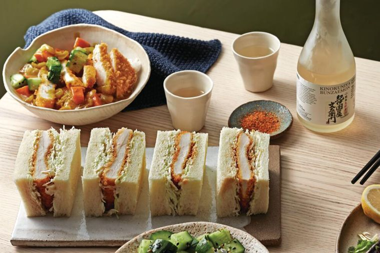

Chicken Katsu

The perfect chicken katsu for your sandwiches!
The Japanese take on fried chicken. It's amazingly good and refreshing, give it a shot for your next lunch!
Ingredients
- 2x320g Chicken breast fillets
- 1/2 cup (75g) Plain flour
- 2 Large eggs, at room temp, whisked.
- 1 1/2 cups (75g) Planko breadcrumbs
- Vegetable oil
Steps
- Slice each chicken breast in half horizontally to create 4 thinner fillets in total.
- Place flour, eggs and panko in 3 separate shallow bowls. Dip chicken into flour, shake off excess, then dip into egg, then into panko, pressing down firmly to coat well. Transfer to a plate and chill for at least 30 minutes to set the crumb.
- Pour oil into a large saucepan to a depth of 5cm. Place pan over medium- high heat. Once oil reaches 170°C (a piece of bread will turn golden in 60 seconds), carefully deep-fry 2 fillets at a time, turning only once during frying, for 3-5 minutes or until deep golden and cooked through.
- Carefully transfer to a large plate lined with paper towel. Use in a sandwich or in a katsu curry.